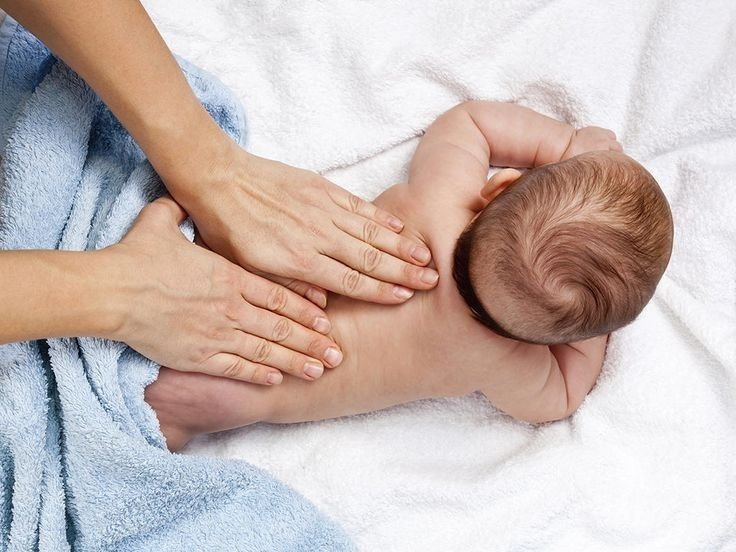
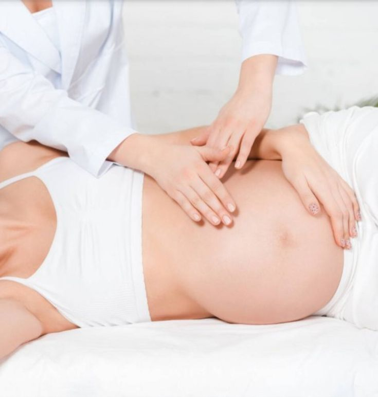

Du nourrisson au senior, en passant par la femme enceinte et le sportif savoyard : le Cabinet de Grésy adapte chaque prise en charge à votre profil et vos besoins spécifiques.
La majorité des patients de votre ostéopathe à Grésy-sur-Aix sont des adultes actifs qui consultent pour des douleurs musculo-squelettiques ou des troubles fonctionnels. Le cabinet traite l'ensemble de la sphère locomotrice — dos, hanches, épaules, genoux — ainsi que les manifestations viscérales et neurologiques périphériques.
Lumbago, hernie discale, sciatique, scoliose fonctionnelle, cervicalgies, syndrome du canal carpien, tendinites : autant de motifs traités quotidiennement au cabinet grésylien.
Maux de tête, migraines de tension, troubles du sommeil, colopathie fonctionnelle, reflux gastro-œsophagien : l'ostéopathie viscérale et crânienne apporte souvent un soulagement durable là où d'autres approches peinent.

Dès la naissance, les contraintes mécaniques subies lors de l'accouchement — ventouse, forceps, siège, césarienne, travail prolongé — peuvent laisser des tensions dans le crâne et le rachis du nourrisson. Une consultation ostéopathique précoce permet de libérer ces restrictions et d'accompagner le développement harmonieux de votre enfant.
Idéalement dans les 4 à 6 premières semaines de vie, et dès l'apparition des signes suivants : tête penchée d'un côté (torticolis), pleurs inconsolables, difficultés à téter, flatulences et coliques excessives, régurgitations fréquentes, asymétrie du crâne (plagiocéphalie).
Coliques, plagiocéphalie positionnelle, torticolis congénital, troubles de la succion, régurgitations, agitation nocturne : ces troubles répondent souvent très bien à 1 ou 2 séances d'ostéopathie douce, sans médicament.
Voir le déroulement d'une séanceLa grossesse impose au corps de la femme des adaptations posturales et mécaniques considérables : déplacement du centre de gravité, relâchement ligamentaire, compression des viscères. L'ostéopathie permet de prévenir et de traiter les lombalgies, les sciatiques, les douleurs symphysaires et les reflux qui accompagnent souvent ces 9 mois.
Un suivi en 3 séances est recommandé : une au 1er trimestre pour l'adaptation posturale, une au 2e trimestre pour les douleurs mécaniques, une en fin de grossesse pour préparer le bassin à l'accouchement.
Après l'accouchement, une séance d'ostéopathie permet de rééquilibrer le bassin, de traiter les tensions du périnée et de recentrer le rachis. Elle est idéalement réalisée entre la 6e et la 8e semaine après l'accouchement, en complément de la rééducation périnéale.

La région d'Aix-les-Bains et des Bauges est un terrain de pratique sportive intense : trail, ski, VTT, natation au lac du Bourget, tennis, rugby… Les sportifs de la région grésylienne ont des besoins spécifiques que le cabinet connaît bien.
Un bilan ostéopathique en début de saison permet de détecter les restrictions de mobilité et les déséquilibres posturaux susceptibles de favoriser les blessures. Le cabinet propose des consultations préventives pour les clubs sportifs de la région.
Après une compétition ou un entraînement intense, l'ostéopathie accélère la récupération en libérant les contractures, en relançant la circulation lymphatique et en restaurant la mobilité des articulations sollicitées.
Pour une consultation en urgence après une blessure sportive, le cabinet propose des créneaux de priorité sur appel au 04 79 35 42 17.
L'ostéopathie n'a pas de limite d'âge supérieure. Les patients seniors — nombreux dans la région thermale d'Aix-les-Bains — consultent pour maintenir leur mobilité articulaire, réduire les douleurs chroniques liées à l'arthrose et améliorer leur équilibre postural, facteur clé de prévention des chutes.
Les techniques sont adaptées à la fragilité des tissus avec l'âge : pas de manipulation en force sur des vertèbres ostéoporotiques, privilège donné aux approches myofasciales et fonctionnelles douces. Pour les seniors à mobilité réduite, le cabinet propose également des consultations à domicile à Grésy-sur-Aix et dans les communes environnantes.
Dès les premières semaines de vie. Il est recommandé de consulter dans les 4 à 6 semaines suivant la naissance pour vérifier l'équilibre crânien et cervical après l'accouchement.
Oui, elle est sûre et efficace à tous les trimestres. Elle soulage les douleurs lombaires, les sciatiques, les reflux et prépare le bassin à l'accouchement. Les techniques sont adaptées à l'état de grossesse.
Elle agit en prévention (entretien de la mobilité, détection des déséquilibres) et en récupération (traitement des contractures, tendinites, entorses). Un suivi régulier améliore les performances et réduit les blessures.
Oui, les seniors bénéficient de l'ostéopathie pour maintenir leur mobilité, réduire les douleurs arthrosiques et améliorer leur équilibre. Les techniques sont adaptées à la fragilité des tissus.
Absolument. Pour les nourrissons, seules des techniques crânio-sacrées et myofasciales douces sont utilisées — sans aucune manipulation en force. Les gestes sont précis, délicats et totalement indolores.